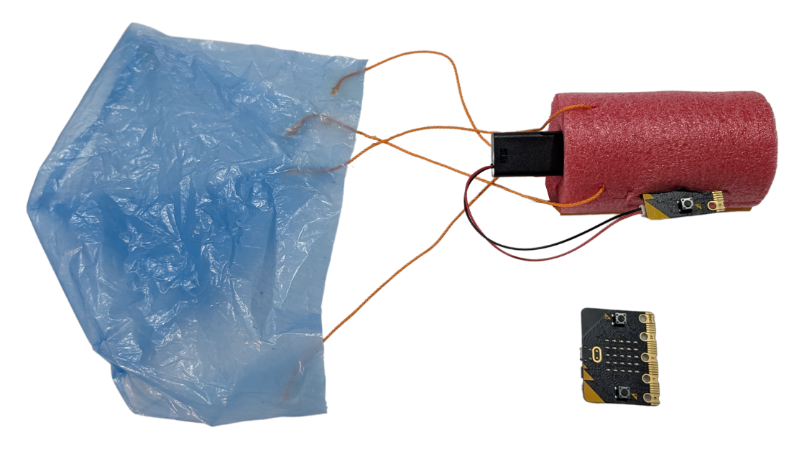
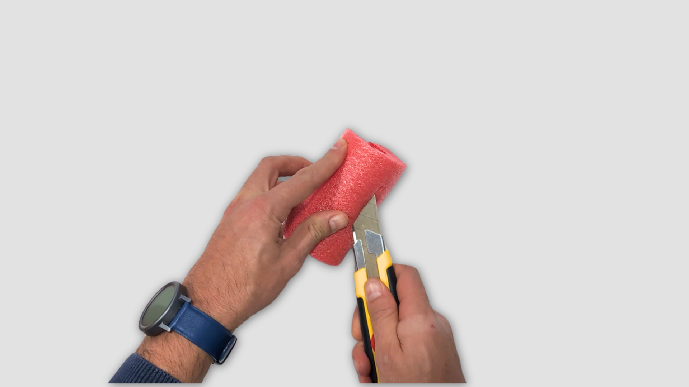
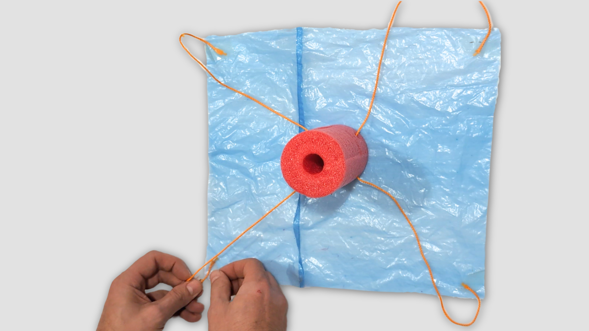
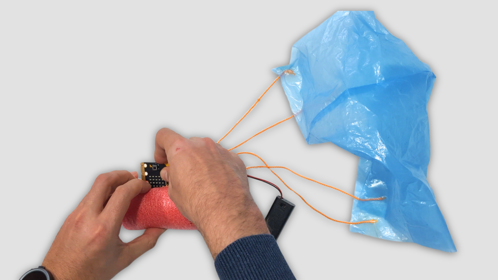
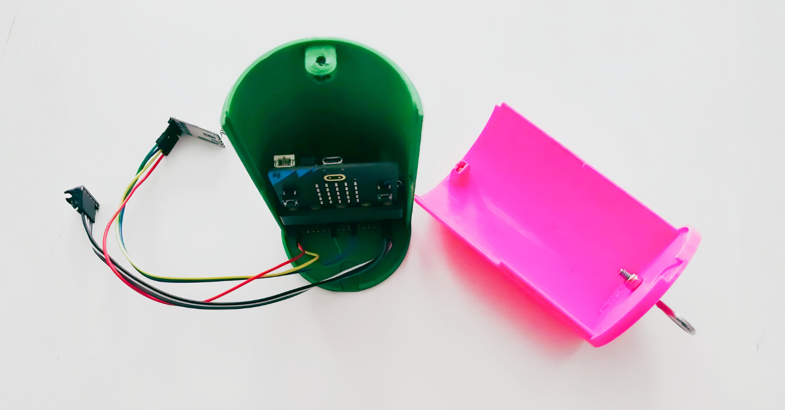

Nos preparamos
En esta etapa vamos a construir nuestro MiniCanSat y a ensamblar todos sus componentes. Usaremos materiales accesibles como un churro flotador de piscina, cuerda, bolsas de plástico y elementos básicos de montaje. Esta será nuestra opción principal por su sencillez y bajo coste. También ofreceremos diseños en 3D (opcional) por si nuestro equipo desea imprimir su carcasa.

Pulsando en el siguiente botón tenemos la lista de materiales que utilizaremos para nuestra construcción.
Para construir nuestro mini satélite vamos a necesitar los siguientes materiales:
- 1 churro flotador (diámetro aproximado de 65 mm).
- Cúter o tijera.
- 1 bolígrafo.
- Cuerda fina (diámetro aproximado 1.5-3 mm).
- 1 bolsa de basura.
- Cinta adhesiva para fijación.
- Micro:bit con portapilas.
Manos a la obra
¡Es el momento de ponernos manos a la obra! En esta fase de nuestro proyecto, el Ingeniero o Ingeniera de sistemas de nuestro equipo liderará el proceso de montaje. Siguiendo con atención los pasos descritos en las siguientes pestañas, lograremos montar un MiniCanSat funcional y seguro. En la última pestaña, tenemos un vídeo explicativo (3:15).
PASO 1: Carcasa
Preparación de la carcasa o cuerpo del satélite:
- Cortamos un trozo de churro de piscina de aproximadamente 115 mm de altura.
- Realizamos dos cortes longitudinales en el centro, que permitirán insertar la placa Micro:bit y el portapilas.
- Con un bolígrafo, hacemos cuatro perforaciones en la parte superior del churro, formando una cruz, para fijar las cuerdas del paracaídas.

¡Seguridad en el taller! El uso del cúter es peligroso. El corte del churro flotador debe realizarse siempre bajo la supervisión directa de nuestro profesor o profesora, o delegar en ellos esta tarea, para evitar cortes o accidentes.
PASO 2: Paracaídas
Diseño y fijación del paracaídas:
- Cortamos dos trozos de cuerda fina de 60 cm y los pasamos por los orificios opuestos, generando 4 puntos de anclaje.
- Cortamos un cuadrado o rectángulo de plástico de una bolsa de basura (30x30 cm o 30x35 cm).
- Unimos los extremos de las cuerdas a las esquinas del plástico con cinta adhesiva.

PASO 3: Montaje
Montaje de los componentes electrónicos:
- Insertamos la Micro:bit en la ranura longitudinal.
- Colocamos el portapilas en el interior del churro, asegurándonos de que no se mueva durante el vuelo.

PASO 4: Misión secundaria
Además de la misión principal —medir la temperatura, la luz y la aceleración durante el vuelo—, nuestro MiniCanSat puede asumir otros retos que nos permitan seguir explorando y comprendiendo mejor el entorno.
A continuación proponemos misiones secundarias. Muchas de ellas nos ayudan a pensar en los grandes retos globales:
- Medición de la contaminación acústica: Usar el micrófono integrado para registrar el ruido (ODS 3: Salud y bienestar y ODS 11: Ciudades sostenibles).
- Temperatura interna o ambiental: Analizar cómo varía la temperatura térmica dentro del MiniCanSat (ODS 13: Acción por el clima).
- Luminosidad ambiental: Observar cambios en la intensidad de la luz y presencia de nubes.
- Estudio de la aceleración y rotación: Detectar fases de caída libre o impactos físicos.
- Calidad del aire: Colocar tiras reactivas (NO₂, CO₂) en el exterior del satélite (ODS 11: Ciudades sostenibles).
- Análisis del suelo/agua: Medir pH o humedad tras el aterrizaje (ODS 15: Vida de ecosistemas terrestres).
- Resistencia de microorganismos a UV: Exponer muestras biológicas inofensivas a radiación simulada.
- Paracaídas bio-inspirados: Explorar cómo semillas u hojas inspiran mejores descensos.
- Simulación de clima espacial: Usar luz intensa o calor para recrear el espacio.
- Registro de energía luminosa: Reflexionar sobre cómo estudiar el cambio climático o el albedo terrestre.
¡Atención al tiempo! En equipo, debatiremos y elegiremos SOLO UNA misión secundaria para realizar en esta sesión.
Vídeo tutorial
El siguiente vídeo (3:16) nos muestra cómo construir nuestro MiniCanSat paso a paso:
Aunque ya hemos aprendido a construir un MiniCanSat con un churro de piscina y un paracaídas rectangular, tenemos la posibilidad de explorar otras soluciones si lo creemos necesario para nuestra misión.
Si contamos con acceso a una impresora 3D, podemos diseñar y fabricar una carcasa más precisa y resistente. En plataformas como Thingiverse o Tinkercad encontraremos muchos modelos que podemos usar como inspiración. Por ejemplo, este modelo de carcasa diseñado para la para alojar una Micro:bit con soporte IOT:Bit y el portapilas.

También podemos experimentar con el diseño del paracaídas: cambiar su forma (circular, hexagonal…), el número de cuerdas, el tipo de material o la manera en que lo unimos a la carcasa. Cada equipo puede investigar, hacer pruebas y decidir qué diseño es el más adecuado.
¡La creatividad y la experimentación forman parte de nuestra misión espacial!
Gran parte del éxito de la misión depende de que nuestro MiniCanSat esté construido lo mejor posible.
Por eso, vamos a esforzarnos en perfeccionar todos los detalles. Como guía, tenemos la "Rúbrica: construcción del MiniCanSat" que nos servirá para autoevaluarnos. En nuestro equipo nos fijaremos en:
- Preparación del cuerpo: Comprobaremos que tiene la forma y las dimensiones adecuadas, que protege bien los componentes y permite que todo encaje de forma segura.
- Diseño y fijación del paracaídas: Revisaremos que los nudos sean seguros para que el descenso sea suave, minimizando el daño del dispositivo.
- Montaje de componentes electrónicos: Aseguraremos que la Micro:bit, el portapilas y los cables estén bien colocados para evitar que se desprendan durante el vuelo.
- Autonomía y trabajo en equipo: Organizarnos bien y ayudarnos entre nosotros hará que el proyecto sea más eficaz. Aprenderemos a repartir tareas y resolver problemas juntos.
- Creatividad y adaptación: Probaremos nuevas ideas para mejorar el diseño (carcasa o paracaídas), encontrando formas más seguras de ensamblar todo y sabiendo adaptarnos a los imprevistos.
Rúbrica: construcción del MiniCansat
- Actividad
- Nombre
- Fecha
- Puntuación
- Notas
- Reiniciar
- Imprimir
- Aplicar
- Ventana nueva
| 4 EXCELENTE | 3 SATISFACTORIO | 2 MEJORABLE | 1 INSUFICIENTE | |
|---|---|---|---|---|
| Preparación del cuerpo del MiniCanSat | Cortamos el churro con precisión; las ranuras permiten un encaje firme y seguro de nuestra electrónica. (2) | Preparamos la carcasa correctamente, aunque el encaje del portapilas queda ligeramente holgado. (1.5) | Realizamos los cortes, pero las ranuras dificultan el montaje y la placa asoma o corre peligro. (1.25) | La carcasa está sin terminar o no permite alojar los componentes. (1) |
| Diseño y fijación del paracaídas | Unimos las cuerdas de forma simétrica a la carcasa y al plástico, asegurando los nudos para un despliegue equilibrado. (2) | Montamos el paracaídas completo, pero la longitud de las cuerdas no es igual o la fijación presenta asimetrías. (1.5) | Montamos el paracaídas con ayuda, pero las uniones resultan frágiles al dar un tirón de prueba. (1.25) | El paracaídas no está terminado o se desprende por completo al manipular el satélite. (1) |
| Montaje de componentes electrónicos | Insertamos la Micro:bit y el portapilas de forma que quedan totalmente inmovilizados y protegidos en el interior. (2) | Colocamos los componentes, pero alguno presenta un ligero movimiento que requiere ajuste extra con cinta. (1.5) | Colocamos los componentes, pero se mueven o se salen con facilidad al inclinar el satélite con la mano. (1.25) | No logramos ensamblar la electrónica dentro de la carcasa de forma funcional. (1) |
| Autonomía y trabajo en equipo | Cumplo rigurosamente con mi rol asignado, respeto al Ingeniero/a de sistemas y resuelvo problemas de forma autónoma. (2) | Asumo mi rol y trabajo bien, aunque requiero que el docente me marque los tiempos o me recuerde mis tareas. (1.5) | Me distraigo de mis funciones y necesito instrucciones constantes para avanzar en la construcción. (1.25) | No respeto mi rol, interfiero en el trabajo de los compañeros o dependo totalmente del docente. (1) |
| Creatividad y adaptación | Explora nuevas ideas (formas del paracaídas, carcasa 3D, mejoras estructurales) y las aplica de forma efectiva. (2) | Propone alguna mejora o variante, aunque necesita ayuda para implementarla. (1.5) | Muestra curiosidad, pero no lleva a cabo cambios por sí mismo/a. (1.25) | No experimenta ni adapta el diseño básico. (1) |
Diario individual de Misión MiniCanSat
Antes de terminar esta fase del proyecto, dedicaremos entre 10 y 15 minutos a reflexionar, en grupo y de manera individual, sobre lo aprendido durante esta fase de nuestro proyecto.
Dejaremos constancia de nuestro aprendizaje. Rellenaremos nuestro propio documento Diario individual de misión MiniCanSat y lo guardaremos en nuestra carpeta personal.
Además, cada equipo actualizará el Diario de misión MiniCanSat de equipo, incluyendo los avances en la programación, pruebas realizadas y ajustes necesarios.
Completar este diario nos ayudará a ser conscientes de nuestro progreso, superar obstáculos y compartir información clave con el equipo. Nos tomaremos unos minutos al final de cada sesión para reflexionar sobre estos puntos.
📖 Contenidos del Diario de Aprendizaje (clic para mostrar)
- 🧠 Reflexión personal
- ¿Qué tareas he realizado hoy?
- ¿Qué dificultades he encontrado y cómo las he resuelto?
- 🌟 Aprendizaje diario
- ¿Qué conceptos nuevos he aprendido?
- ¿Qué ideas o habilidades he mejorado?
- 🤝 Colaboración en el equipo
- ¿Cómo ha sido mi comunicación y trabajo con el equipo?
- ¿Qué aspectos podría mejorar en la colaboración?
- 📝 Otra información
- Anotaciones adicionales sobre el proceso, ideas o problemas.
- Diario de equipo: ¿Qué información de mi diario individual es útil para el grupo?
- ¿Qué parte de la construcción del MiniCanSat nos ha parecido más interesante o divertida?
- ¿Cómo hemos resuelto en equipo los retos al cortar el churro y fijar los componentes?
- ¿El paracaídas ha quedado bien sujeto? ¿Qué podríamos mejorar para que vuele mejor?
- ¿Cómo hemos trabajado en equipo? ¿Hemos respetado las decisiones del Ingeniero/a de sistemas y repartido bien las tareas?
- ¿Hemos aprendido a usar herramientas y a ensamblar piezas con más seguridad y precisión?
- ¿Qué cambiaríamos o mejoraríamos si tuviéramos que volver a construir otro MiniCanSat?
- ¿Hemos tenido alguna idea diferente que podríamos probar más adelante (por ejemplo, otro material para la carcasa)?